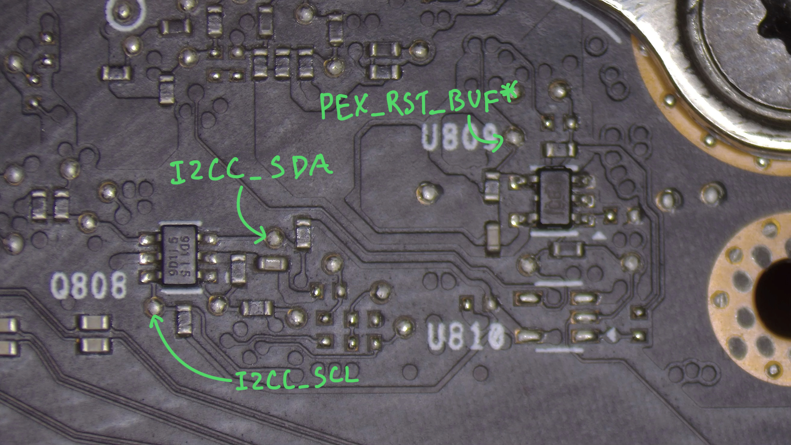
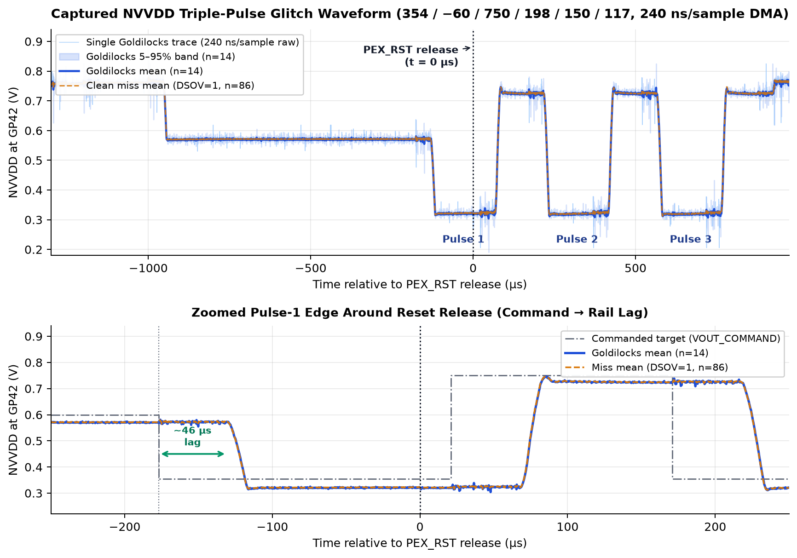

01 / 07 · Before changes
Identify the card
Use the Ubuntu computer with the CMP 170HX in PCIe and the Pico on USB. Record the card label and any known previous work. Capture its full PCI address, subsystem ID, driver-visible memory and firmware version.

lspci -Dnn | grep -i nvidia
nvidia-smi --query-gpu=pci.bus_id,name,memory.total,vbios_version --format=csvlspci shows a full address such as 0000:1a:00.0. nvidia-smi reports current driver-visible capacity if the driver is working. Use your actual address in later commands.
A stock-like reading is a baseline, not proof that the card has never been glitched or modified. An earlier temporary glitch may leave no obvious driver-visible trace.
02 / 07 · Fuse snapshot
Read the pre-campaign baseline
Clone and install pico-ga100vfi on that same host. Its baseline command reads shadow fuse registers over PCIe BAR0. The upstream workflow requires the NVIDIA driver unloaded for direct BAR0 access.
git clone https://github.com/dalzyu/pico-ga100vfi.git
cd pico-ga100vfi
python3 -m venv .venv
.venv/bin/python -m pip install -e host/
GPU_BDF=0000:1a:00.0 # replace with your card's PCI address
sudo .venv/bin/python -m ga100vfi baseline --bdf "$GPU_BDF"A JSON object of named shadow fuse values. GPU config space unreachable (0xffffffff) means the card is not readable through this path. Save the output alongside the card's physical label.
Compare with the card's known history and later results. This snapshot describes its current fuse shadow. It cannot authenticate a factory-original state. Upstream host usage
03 / 07 · Physical connections
Wire the Pico and GPU
Disconnect power first. Match the pictured PCB layout before using its marked solder pads. Attach Pico GP0 to GPU I2CC_SDA, GP1 to I2CC_SCL, GP22 directly to PEX_RST_BUF*, and GND to a verified GPU ground point. The source photo does not name a particular ground pad. Leave Pico 3V3 and VBUS disconnected from the GPU.



Insulate and strain-relieve the wires. Check continuity to the intended nets and for adjacent-pad shorts before powering up.
04 / 07 · Firmware build
Build pwmvid.uf2
Install the ARM compiler, CMake and Ninja, then fetch Pico SDK 2.2.0. Run these commands from the upstream checkout. Compare package names with the upstream build guide if your Linux distribution differs.
sudo apt install git cmake ninja-build gcc-arm-none-eabi libnewlib-arm-none-eabi libstdc++-arm-none-eabi-dev
git clone --branch 2.2.0 --depth 1 https://github.com/raspberrypi/pico-sdk.git ../pico-sdk
git -C ../pico-sdk submodule update --init --recursive
export PICO_SDK_PATH="$PWD/../pico-sdk"
cmake -S firmware -B build-pico2w -DPICO_BOARD=pico2_w -DBOARD_RP2350A=ON -G Ninja
ninja -C build-pico2wboard family = BOARD_RP2350A, normal build (stock clocks, no ADC), and build-pico2w/pwmvid.uf2.
Raspberry Pi's official Pico 2 W board definition selects RP2350A. The pinned upstream README defaults to RP2350B for Pico 2 W, so the explicit family flag above matches our verified board. Board-family evidence
05 / 07 · Pico flash
Flash and check the Pico
Unplug the Pico. Hold BOOTSEL while reconnecting USB and release it when the RP2350 volume appears. Copy the upstream image to the actual mount path on your host.
cp build-pico2w/pwmvid.uf2 /run/media/$USER/RP2350/The RP2350 drive disappears and the same Pico reappears as a USB CDC serial device, commonly /dev/ttyACM0.
The read-only v command checks the running Pico firmware. It does not test the GPU connection.
.venv/bin/python - <<'PY'
import serial
with serial.Serial('/dev/ttyACM0', 115200, timeout=2) as pico:
pico.write(b'v')
print(pico.readline().decode().strip())
PYclk=150 MHz last reset: power-on / external resetThe normal upstream build reports the clock and reset reason. Other reset reasons can appear. Protocol reference
06 / 07 · Voltage glitch
Run campaign
With the Pico wired to the card, the host sends commands to the Pico over USB serial and checks the GPU through PCIe after each attempt. The Pico uses I²C/PMBus and PEX_RST to time the NVVDD dip.
sudo .venv/bin/python -m ga100vfi campaign --bdf "$GPU_BDF" --adaptive[8] v_dip=356 valid=5 lost=3 dsov=0 crc=0x55 priv=0xffffffff GOLDILOCKSNumbers vary by card. Look for dsov=0, CRC 0x55, open privilege mask, and GOLDILOCKS. The final JSON has "goldilocks": true on success. The default budget is 500 attempts. Adaptive guide

07 / 07 · Interpretation
Read the verdict
The campaign reaches a temporary Goldilocks state and hands voltage control back to stock PWM-VID on exit. It logs a successful card-specific profile in goldilocks.jsonl.
tail -n 1 goldilocks.jsonlA JSON line with time, card serial, PCI address, attempt count and profile. It contains card identifiers, so keep it with local bench records. Failed campaigns may have no new log line.
Later fuse work
Kate's research describes re-sensing control fuses, enabling programming, reading that die's defect masks, appending FF records and power cycling. These permanent operations are not commands in the Pico repo. Check usable memory and compute after a full power cycle before making capability claims.